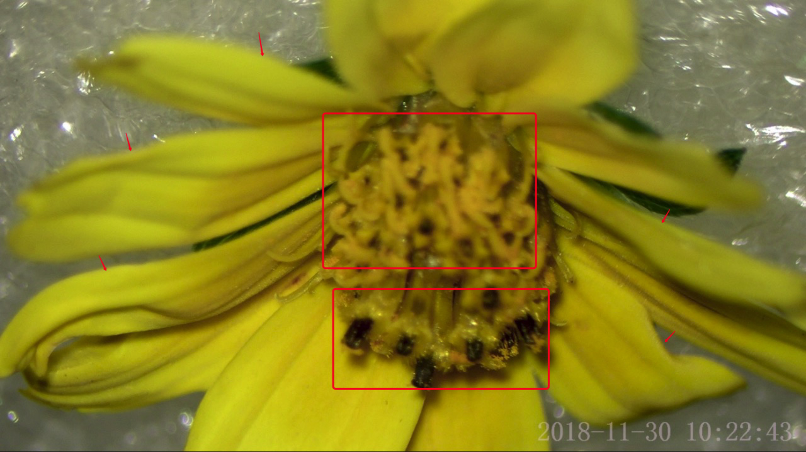
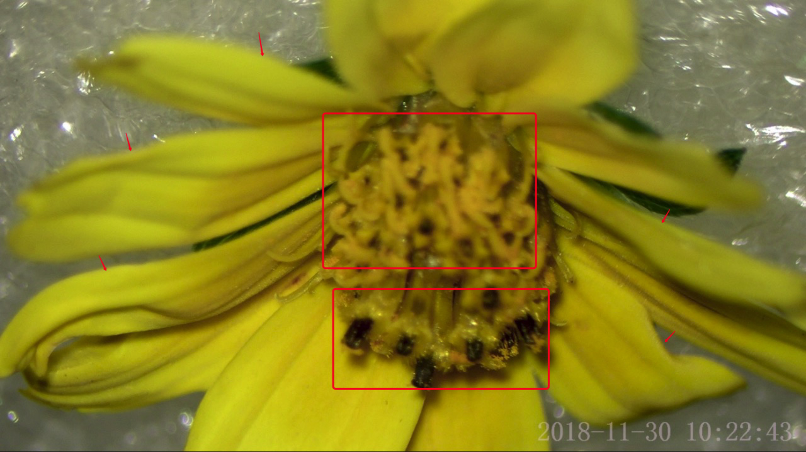

A hybrid supervised fusion deep learning framework for microscope multi-focus images
Project Leaders
Qiuhui Yang
The quality of multi-focus microscopic image fusion largely depends on the precision of image registration technology. Due to the existence of fuzzy regions and weak textures in multi-focus microscope images, the registration of patches is suboptimal. However, algorithms specifically designed for the registration of multifocal microscopic images are scarce. We aim to develop a comprehensive pipeline for fusion based on the registration process, utilizing hybrid supervision methods to enhance registration accuracy.
Firstly, we need to preprocess the multi-focus microscope images, including noise removal, brightness adjustment, and contrast enhancement to improve the image quality and prepare for the subsequent registration process.
Next is the critical image registration stage. We plan to adopt hybrid supervision methods, combining unsupervised and supervised learning approaches, to increase registration precision. Unsupervised learning can handle the issues of fuzzy regions and weak textures through self-learning and self-adaptation. Supervised learning, on the other hand, can learn and understand the features and structures of images through a training dataset, thereby improving the accuracy of registration.
After the registration is complete, we will proceed with the fusion of multi-focus microscope images. This step will merge images from different focal points based on the registration results, generating an image with higher clarity and richer details.
Finally, we will post-process the fused image, including sharpening, removing artifacts, etc., to further enhance the image quality. Additionally, we will evaluate and optimize our comprehensive pipeline through evaluation metrics such as fusion effect, contrast, and clarity.
Our goal is to develop a high-precision, efficient, and scalable comprehensive pipeline for multi-focus microscope image fusion. We believe that the hybrid supervision methods will significantly improve the registration precision, thereby enhancing the quality and usability of the fused images.


 
